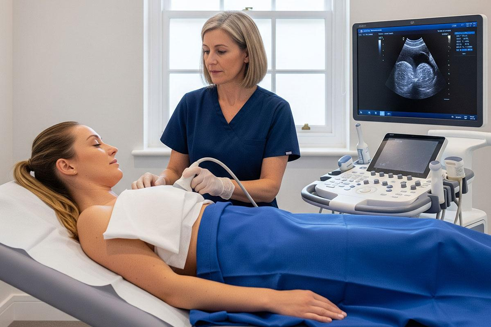
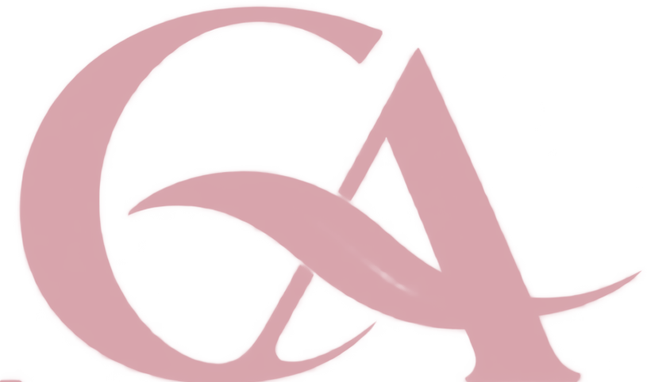
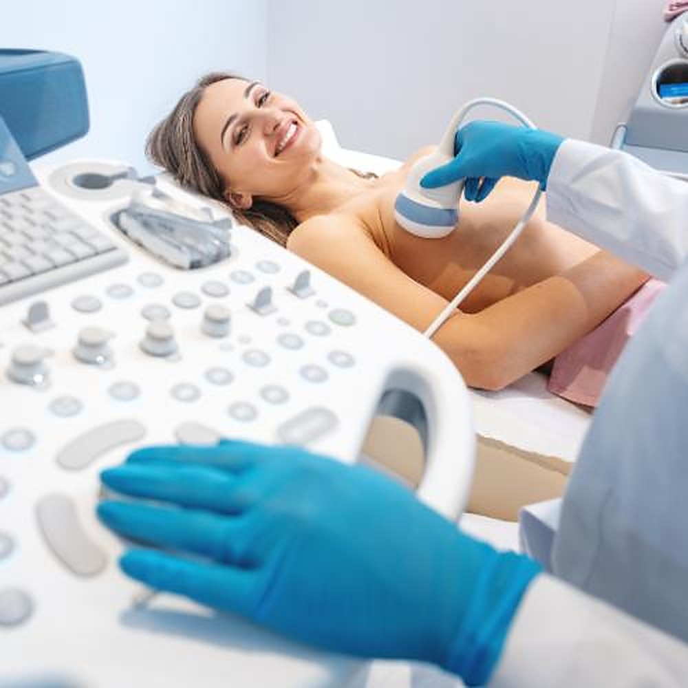
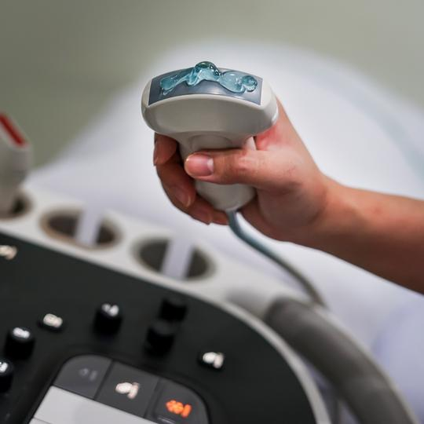

Clínica Agra · Centramed
Saúde da mulher

Ultrassom de mama
Cuidar das mamas
também é uma forma
de se cuidar.
O que você precisa saber sobre o ultrassom de mama?
Clínica Agra
O exame
Ondas sonorassem radiação ionizante
O que é o
ultrassom de mama?
É um exame de imagem que utiliza ondas sonoras para avaliar o tecido mamário e ajudar a investigar alterações, como nódulos e cistos, sem utilizar radiação ionizante.

Clínica Agra
Indicações
Quando esse exame
pode ser indicado?
- i.Investigação de nódulos ou alterações palpáveis.
- ii.Avaliação de achados identificados em outros exames.
- iii.Complementação da mamografia, quando indicada.
- iv.Investigação de sintomas conforme orientação médica.
A indicação é individual e deve ser definida por um profissional de saúde.
Clínica Agra
Como funciona
É simples e não utiliza radiação.


Durante o exame, o profissional aplica um gel sobre a pele e movimenta o transdutor na região das mamas para obter imagens internas.
É um procedimento não invasivo
e geralmente bem tolerado.
Clínica Agra
Prevenção com orientação
Sua saúde
merece atenção.
Converse com um profissional de saúde e saiba qual exame é indicado para você.
Agende sua avaliação